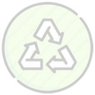
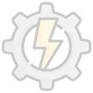

8 (800) 707-71-24
МОБИЛЬНЫЙ КОМПЛЕКС ДЛЯ ПЕРЕРАБОТКИ
УГЛЕРОДОСОДЕРЖАЩИХ ОТХОДОВ
с возможностью генерации электрической или тепловой энергии
Узнайте за 2 минуты как выглядит и работает установка, а также оцените все ее основные преимущества!
Заполните заявку для получения коммерческого предложения:
МОБИЛЬНЫЙ КОМПЛЕКС ПРЕДНАЗНАЧЕН ДЛЯ УТИЛИЗАЦИИ СЛЕДУЮЩИХ ВИДОВ ОТХОДОВ:
Коммунальные отходы (пластик, упаковка, одежда, древесина и пр.)
Медицинские отходы (бинты, шприцы, капельницы, отходы лабораторий, просроченные лекарства)
Биоорганические отходы вперемешку с углеродосодержащими
Различные промышленные отходы
КАКОЙ ПРИНЦИП УТИЛИЗАЦИИ ОТХОДОВ?
Принцип утилизации основан на технологии термохимической конверсии.
Термохимическая конверсия – это цепная термохимическая реакция разложения и преобразования углеродосодержащих материалов (отходов) в синтез-газ, протекающая с выделением значительного количества тепловой энергии (при установке к модулю «Утилизатор» дополнительного модуля тепловая энергия может быть преобразована в электрическую).
Модуль «Утилизатор», модель Д-500
КАК ПРОИСХОДИТ ПРОЦЕСС УТИЛИЗАЦИИ?
Реактор мобильного комплекса (см. схема) путем розжига в нем обычного древесного угля разогревается примерно за 30 мин. до температуры 400°С, которой достаточно для начала запуска цепной реакции термохимической конверсии.
Углеродосодержащие отходы загружаются в реактор, доступ кислорода в который ограничен. В реакторе в процессе термохимического разложения отходы преобразуются в высококалорийный синтетический газ, который поступает в вихревую камеру и используется для выработки тепловой энергии.
Рабочий диапазон температуры в реакторе от 1100°С до 2000°С при этом максимальная температура уходящих из системы вытяжки газов не более 265°С. Зольный остаток возможно использовать в коммерческих целях (в строительстве, нефтехимии).
Ключевое отличие метода термохимической конверсии от сжигания – отсутствие кислорода, поэтому нет условий для образования токсичных и ядовитых соединений (диоксины, фураны и т.п.), при этом уровень выбросов в атмосферу меньше чем у типовых газовых котельных.
Таким образом, данная технология утилизации отходов является максимально экологически безопасной для окружающей среды.
МОДУЛЬ «УТИЛИЗАТОР» ПРЕДСТАВЛЕН В СЛЕДУЮЩИХ КОМПЛЕКТАЦИЯХ:
1 | Д-500
Производительность утилизации:
не более 2000 кг или 15 куб. м. в сутки;

Габариты: длина 6000 мм, ширина 2400 мм, высота 2400 мм;
Масса станции: 5420 кг.;
Номинальное напряжение: В: 380 В +/- 10%;
Частота: Гц: 50-60 Гц +/- 2%;
Максимальная суммарная потребляемая мощность: 550 Вт;
Режим работы: круглосуточно;
Время выхода на рабочий режим: 45 мин.;
Время непрерывной работы: 150 ч.;
Степень переработки отходов: до 99,9 % в зависимости от содержания в отходах элементов не подлежащих термохимической конверсии (стекло, керамика, металл и тп.);
Обслуживающий персонал: 1 чел./смена;
Установленная мощность: 6 кВт;
Мгновенная пиковая температура протекания термохимической конверсии: 2000°С.
2 | Д-1000
Производительность утилизации:
не более 3500 кг или 30 куб. м. в сутки;
Габариты: длина 6000 мм, ширина 2400 мм, высота 2400 мм;
Масса станции: 6220 кг.;
Номинальное напряжение: В: 380 В +/- 10%;
Частота: Гц: 50-60 Гц +/- 2%;
Максимальная суммарная потребляемая мощность: 720 Вт;
Режим работы: круглосуточно;
Время выхода на рабочий режим: 45 мин.;
Время непрерывной работы: 150 ч.;
Степень переработки отходов: до 99,9 % в зависимости от содержания в отходахэлементов не подлежащих термохимической конверсии (стекло, керамика, металл и тп.);
Обслуживающий персонал: 1 чел./смена;
Установленная мощность: 8 кВт;
Мгновенная пиковая температура протекания термохимической конверсии: 2000°С.
3 | Д-2000
Производительность утилизации:
не более 6500 кг или 60 куб. м. в сутки;

{kind=link}
{kind=link}
{kind=link}
{kind=link}
{kind=link}
{kind=link}
{kind=link}
Габариты: длина 4800 мм, ширина 6000 мм, высота 5800 мм;
Масса станции: 22000 кг.;
Номинальное напряжение: В: 380 В +/- 10%;
Частота, Гц: 50-60 Гц +/- 2%;
Максимальная суммарная потребляемая мощность: 1350 Вт;
Режим работы: круглосуточно;
Время выхода на рабочий режим: 45 мин.;
Время непрерывной работы: 150 ч.;
Степень переработки отходов: до 99,9 % в зависимости от содержания в отходах элементов не подлежащих термохимической конверсии (стекло, керамика, металл и тп.);
Обслуживающий персонал: 2 чел./смена;
Установленная мощность: 10 кВт;
Мгновенная пиковая температура протекания термохимической конверсии: 2000°С.
ПРЕИМУЩЕСТВА МОБИЛЬНОГО КОМПЛЕКСА
(Модуль «Утилизатор»):
Не относится к категории «мусоросжигательного» оборудования с технологической и юридической точки зрения
Относится к категории химического оборудования, таким образом отходы не обезвреживаются (сжигаются), а утилизируются (перерабатываются в тепловую или электрическую энергию)
Уровень выбросов в атмосферу меньше чем у типовых газовых котельных
Не относится к категории «мусоросжигательного» оборудования с технологической и юридической точки зрения
Экологически безопасная утилизация широкого спектра отходов обеспечена применением технологии термохимической конверсии
Гарантийный срок составляет 12 мес. Срок службы мобильного комплекса (модуль «Утилизатор») до 10 лет!
Утилизация отходов происходит без подачи дополнительного топлива (не требуется дополнительный газ, уголь, дизель и т.п.)
Обеспечивает уменьшение объема перерабатываемых отходов до 99,9% в зависимости от содержания элементов не подлежащих термохимической конверсии (стекло, керамика, металл и т.п.)
Возможно коммерческое использование зольного остатка (в строительстве, нефтехимии)
Технологический процесс утилизации отходов требует минимальных эксплуатационных затрат
Является альтернативой инсинераторам и крематорам
По техническому заданию Заказчика исполнение мобильного комплекса возможно в следующих модульных вариантах:
1
Мобильный комплекс для утилизации отходов
модуль «Утилизатор»,
тепловая энергия рассеивается в воздух
2
Мобильный тепловой комплекс
модуль «Утилизатор» + модуль передачи тепловой энергии мощностью от 0,1 до 1 МВт
3
Мобильный энергетический комплекс
модуль «Утилизатор» + модуль передачи тепловой энергии мощностью от 0,1 до 1 МВт
ЗАПИШИТЕСЬ НА ОЧНУЮ ДЕМОНСТРАЦИЮ РАБОТЫ УСТАНОВКИ
Заполните заявку для связи с менеджером компании
Модуль "Утилизатор" от компании Экосистема представлен на демонстрационной площадке в г. Жуковский (МО).
Мы приглашаем Вас для очного ознакомления и презентации работы установки в будние дни.
8 (800) 707-71-24
123100, г. Москва,
Пресненская наб., дом 12,
этаж 45, оф. 82